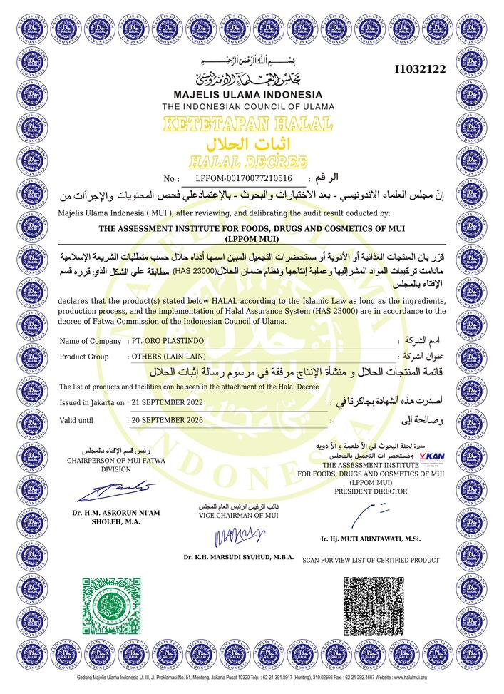
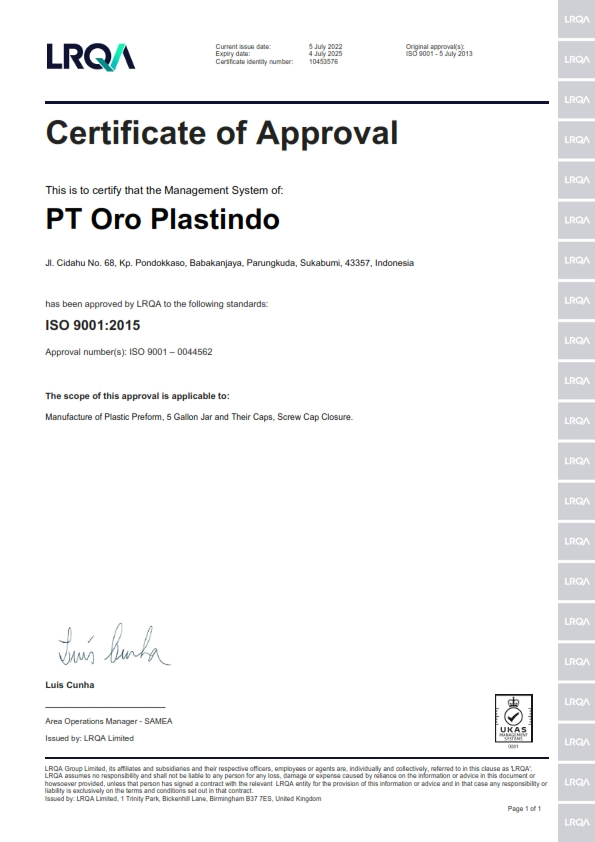

Komitmen kami terhadap kualitas, keamanan, dan perbaikan berkelanjutan di setiap aspek bisnis
Empat pilar utama yang menopang komitmen kami terhadap kualitas, keamanan, dan inovasi berkelanjutan
Tersertifikasi ISO 9001:2015 memastikan konsistensi kualitas dan perbaikan berkelanjutan di seluruh operasional kami. Standar internasional ini menjadi landasan sistem manajemen mutu yang kami terapkan setiap hari untuk kepuasan pelanggan maksimal. Our commitment to continuous improvement benefits every customer we serve.
Pelajari Lebih / Learn MoreTersertifikasi Halal oleh MUI, menjamin keamanan pangan sesuai prinsip-prinsip Islam dan standar keamanan internasional. Sertifikasi ini membuktikan bahwa setiap produk kami aman dan sesuai dengan ketentuan halal yang berlaku di Indonesia dan pasar global. We take food safety and consumer protection very seriously.
Pelajari Lebih / Learn MoreMematuhi regulasi BPOM untuk bahan yang kontak langsung dengan makanan dan minuman adalah prioritas utama. Kepatuhan penuh terhadap standar BPOM memastikan setiap produk kami aman digunakan oleh konsumen akhir dengan risiko kontaminasi minimal. We maintain the highest standards for direct food contact materials.
Pelajari Lebih / Learn MoreMenerapkan metodologi perbaikan berkelanjutan untuk meningkatkan efisiensi dan produktivitas di setiap lini operasional. Filosofi Kaizen mendorong seluruh tim kami untuk terus berinovasi dan menemukan cara-cara baru yang lebih baik. Through continuous improvement, we reduce waste and increase value for customers.
Pelajari Lebih / Learn MorePenjelasan mendalam mengenai setiap sistem manajemen yang kami terapkan untuk excellence
ISO 9001:2015 adalah standar internasional untuk sistem manajemen mutu. Sertifikasi ini menegaskan komitmen PT Oro Plastindo dalam memberikan produk yang konsisten memenuhi persyaratan pelanggan dan regulasi yang berlaku. Kami menerapkan siklus PDCA (Plan-Do-Check-Act) secara menyeluruh di setiap proses produksi.
Sertifikasi Halal dari Majelis Ulama Indonesia (MUI) membuktikan bahwa seluruh bahan baku dan proses produksi kami telah memenuhi standar halal yang ketat. Ini memberikan jaminan kepada konsumen Muslim bahwa produk kemasan kami aman dan sesuai syariat Islam.
Kepatuhan terhadap regulasi Badan Pengawas Obat dan Makanan (BPOM) adalah prioritas utama kami. Semua material yang bersentuhan langsung dengan produk makanan dan minuman telah melalui seleksi ketat untuk memastikan keamanan konsumen.
Filosofi Kaizen mendorong setiap anggota tim kami untuk secara proaktif mencari peluang perbaikan. Dengan pendekatan lean manufacturing dan pemberdayaan karyawan, kami terus meningkatkan efisiensi, mengurangi pemborosan, dan menghasilkan produk yang lebih baik.
Bukti nyata komitmen kami terhadap standar kualitas internasional dan keunggulan berkelanjutan

Sertifikat ISO 9001:2015

Sertifikat Halal MUI
Percayakan kebutuhan kemasan Anda kepada mitra yang telah terbukti memenuhi standar kualitas tertinggi di industri. Kami berkomitmen pada kesuksesan Anda. Trust us as your partner in packaging excellence and quality assurance.
Minta Info Sertifikasi / Request Certification Info